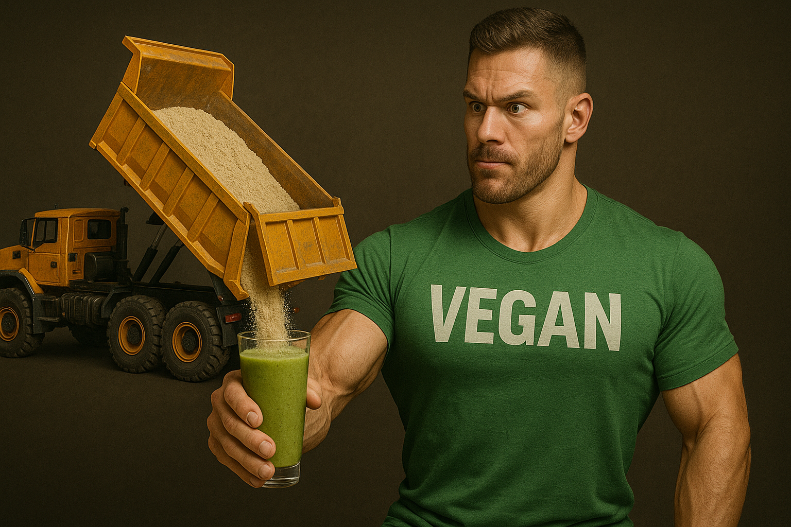

How Much Vegan Protein Do You Need Per Day
Protein targets aren’t one-size-fits-all, but science gives a workable range. The International Society of Sports Nutrition pegs the sweet spot for active adults at 1.4–2.0 g protein per kilogram of body weight per day, rising toward 2.3 g/kg when you diet hard and want to hold muscle. *
A meta-analysis of fifty resistance-training studies found gains in fat-free mass plateaued once total intake hit about 1.6 g/kg; eating more added no extra size unless you were cutting calories. *
Do vegans need a bump? Plant proteins digest slightly slower, yet when total grams and leucine are matched, muscle growth stands toe-to-toe with animal protein. A 2023 review and a 2022 twelve-week lifting trial both showed vegan and omnivorous high-protein diets produced identical strength and hypertrophy. * *
Translation: aim for the same 1.6–2.0 g/kg baseline, then add roughly 0.2 g/kg insurance if most of your protein comes from single-source grains instead of balanced blends. A 70 kg lifter therefore lands near 120–140 g on training days.
Hitting numbers quickly means scouting scoops with at least 20 g protein and about 2.5 g leucine each.
- Vega Sport Premium Protein packs 30 g protein plus 5 g BCAAs, so two shakes push a 70 kg athlete halfway to target.
- Orgain Organic Plant-Based Protein Powder delivers 21 g protein at a dollar a serving, letting budget lifters split their quota between powder and tofu stir-fries.
- Naked Pea Protein offers 27 g single-ingredient protein; pair one scoop with fortified almond milk and oatmeal to front-load 35 g before noon.
Even on rest days keep intake above 1.2 g/kg to stay in positive nitrogen balance; your muscles recover when the gym lights are off, not while you’re curling. Spread doses across four to five meals roughly every three hours—the ISSN notes that 20–40 g boluses with 10 g essential amino acids maximize synthesis in each window. *
Don’t forget the hidden grams. Chickpeas carry about 15 g protein per cup, tempeh clocks 18 g per 100 g, and even whole-grain bread chips in two grams a slice. Count everything so you don’t overshoot and turn a lean-gain phase into a calorie surplus.
In summary: set daily protein at 1.6–2.0 g/kg, edge higher during cuts, and trust well-formulated vegan powders to deliver leucine alongside legumes and seitan. Track totals, space feedings, lift heavy, and let the math—not the myths—dictate how much plant power goes into your shaker each day.